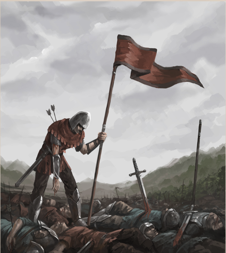

Renown is a passive attribute meant as a method for the Game Master to track how certain creatures or other non-playalbe characters would react to the players. Renown is usually linked to factions, races and species, although if a Game Master wishes, or for simpler short campigns, they can simply reduce it to a per species basis.
Reputation is simply put as how well your character is valued. This doesn't affect how well known your character is, it only tells how others of a species, race or faction will react upon seeing your character. Note that reputation can be split from the specific to the overall, and that is where fame helps out.
Fame shows how well a character is known within the realm of Avokrarth, be they famous or infamous. The greater the fame, the more likely the character is to be recognized, even if it's only for the city guards to quickly try to lock them up.
For example, a harpy character can be well liked by a human village they helped save from a maurauding orc band, but they would still be quickly hunted or chased out by humans of another area who know not of their heroic act.
These are the list of reputations for the given campaign, be it a person or a faction. It is the Game Master's duty to create a reputation list for the campaign they create, and to let players know of them as they are encountered. Note that all species in the rulebook have a general reputation list to give players a good idea of race relations.
“Bonus Text!”
While individuals can be influenced and learn to trust or even admire those not of their own kind, the overall special reputations never change. This is due to it being an average and reasonable guess of how memebers of that species will react in response of meeting another.
Compare this with a character's reputation with a guild or a particular caste, where the members would be told of the character, including their appearance and past actions. This would make them either more reasonable or aggressive, depending on the character's reputation and fame.
Together, fame and reputation gives a title of sorts for each faction one encounters, telling how they would react to the character. While reputation dictates the direction of the chart (kindness at positive numbers and suspicion for negative numbers), fame dictates the distance from neutral and actual number.
| Worshipped Revered Honoured | Serve without Question |
| Admired Respected Trusted | Aid on Sight |
| Friendly Accepted Tolerated | Open to Aid |
| Neutral | Neutral |
| Doubted Distrusted Hostile | On Guard |
| Hated Reviled Hunted | Attack on Sight |
| Feared Dreaded Terrified | Attack/Flee on Sight |